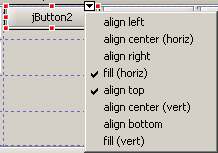
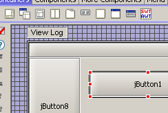

Customizable
component palettes
|
The
component/layout palettes shown at the top of the GUI editor can
be edited using a new Jigloo preference page. You can
add/delete/re-arrange component palettes, as well as standard and
custom classes. Palettes and classes can be moved by selecting one or
more palettes or classes and dragging them to the desired position.
Also, multiple classes may be imported in one step from archive files
(using the "Add beans from Archive" button in the above preference
page).
|
Grid-adjust bars improved
|
The bars at the
edge of containers with GridBag, Table or Form layout managers now only
appear when the container
is selected, and not when the mouse enters the container, to minimise visual
distractions when designing forms.
Also, new "Insert/delete spacer rows/columns" options have been added
to the right-click menu.
|
| Customizable
property categories |
Properties are now
displayed under "Categories". The deafult categories are "Basic",
"Expert" and "Hidden", but categories can be added/deleted or renamed.
Certain properties are by default assigned to the "Basic" category, but
you can define a category for a property by right-clicking on the property and choosing one of the
"Set property category..." options.
You can also right-click on categories to change their name, delete or
add new categories.
|
Alignment
button added (with alignment assistant dialog)
|
A
small button with an arrow has been added to the top-right of the frame
displayed around each selected element of a GUI form, allowing quick
access to either a drop-down menu of alignment constraint options (for
BorderLayout and TableLayout) or for popping up an "alignment
assistant" dialog.
Here is the result of clicking on the arrow for a component in a TableLayout:

Here is the result for a component in a GridBagLayout - the assistant
will stay visible and on-top while different components (even multiple
components) are selected:
...and here is the "anchor assistant" for a Swing AnchorLayout or a SWT FormLayout:
|
| Frame
decorations shown in GUI editor |
A
window frame is now shown in the GUI editor when designing Swing
JFrames and JDialogs, and SWT Composites and Dialogs, allowing the
frame title and icon to be displayed when they have been defined.
|
| Snap-Grid changes |
The
snap-grid is automatically shown if an element in an Absolute, Anchor
or SWT FormLayout is selected or dragged. Otherwise it is hidden.

This behaviour can be turned off (the snap-grid can still be toggled
manually using the button in the "Outline" view) in the Jigloo
preferences page, and the size of the grid can also be set.

|
| Button
bar for alignments, etc and preferences
popup |
A
vertical toolbar has been added to the left side of the GUI form
editor, allowing quick access to the Jigloo preference pages and the
Jigloo documentation, as well as to actions for aligning components
with respect to each other and to the snap-grid (when it is shown).
Most of the alignment buttons will stay disabled till more than one
form element is selected.
|
| Custom
property editor support improved |
Custom property editors are now displayed inside a SWT dialog shell, with "OK" and "Cancel" buttons.
|
| Preferences
pages as tree nodes. |
Instead
of being all in a single tabbed-panel, the Jigloo preferences pages are
now a page each, grouped under the "Jigloo GUI Builder" tree node in
the preferences dialog.
|
Look and Feel preference page added.
|
A
"Look and Feel" page has also been added, allowing the user to add
and delete Look and Feels without having to place the jar files in the
JRE's folders. Any of the Look & Feels can be set as the "default"
L&F by checking it's checkbox in the preference page - if a default
is set then any Swing container will be shown in the GUI editor using
this L&F;.
|
| Hold
SHIFT down to place multiple components |
To
add multiple components of the same type, hold the SHIFT key down when
adding a component. To cancel the crosshair cursor (if you change your
mind after holding SHIFT down and before adding another component) you
can use the ESC key.
|
| Option
to time-out on set property method calls |
Occasionally,
a set-property method called by Jigloo when in design mode might freeze
Eclipse. If this happens, check the "Use timeouts..." option in the
"Parsing" tab of the Jigloo preferences (after re-starting Eclipse) and
all set-property methods will be timed out after less than a second -
and the problematic method reported to the user. This option should
only be checked if Eclipse freezes since it leads to a slight
performance cost.
|
| Improved error handling |
If
Jigloo encounters an error while parsing your code, the "View Log"
button will flash between white and red, indicating that you should
click on it to see the error report - this will help to diagnose any
problems Jigloo might have in displaying your form correctly.
|
Eclipse
3.2 supported
|
Works
with Eclipse 3.2M1, M2 and M3
|
|